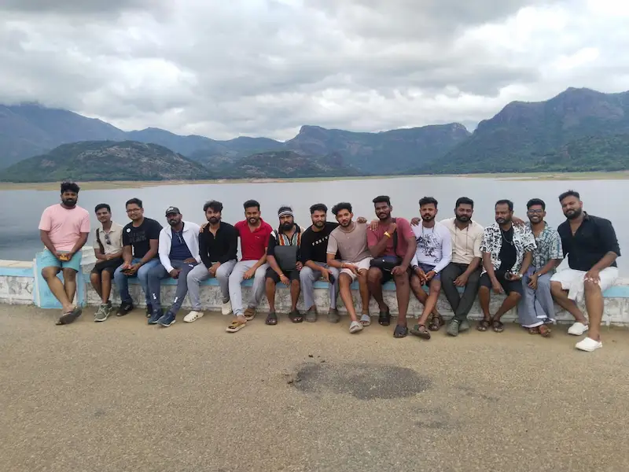
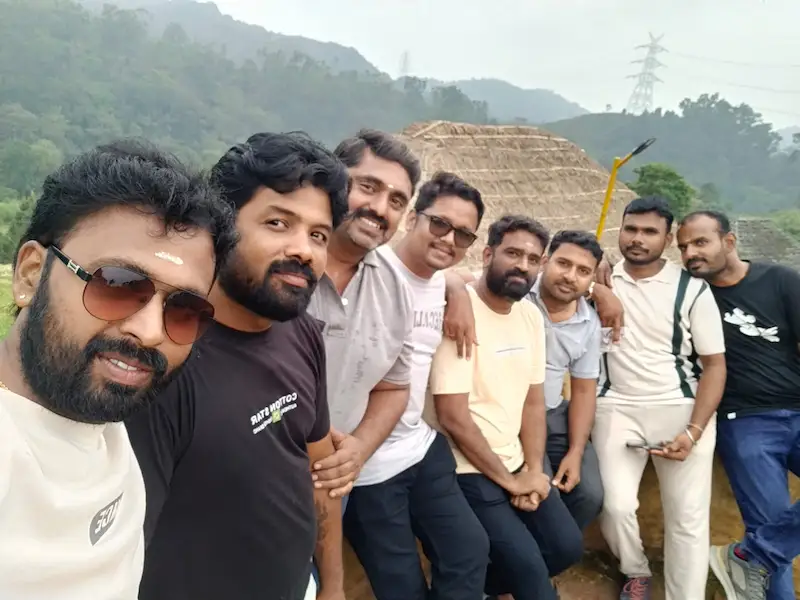
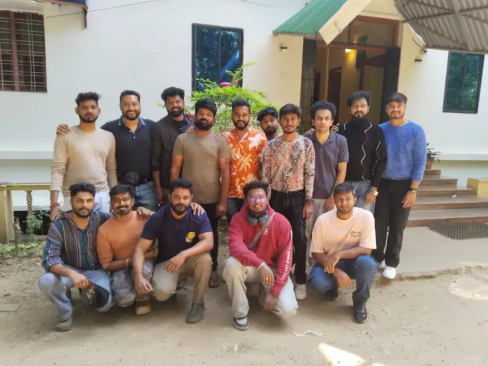

Kanthaloor Group Trip from Pollachi & Tiruppur
Explore our Kanthaloor group trip experience with Inaindha Kaigal and discover the memories we created together.
Our Kanthaloor Group Trip Experience
Our Kanthaloor group trip with Inaindha Kaigal was filled with memorable moments, beautiful views and enjoyable travel experiences. We travelled together as a group, explored Kanthaloor and created wonderful memories with friends.
Inaindha Kaigal brings travel lovers together to explore beautiful destinations across Tamil Nadu, Kerala and South India.
Kanthaloor Trip Memories
A few memorable moments from our Kanthaloor group trip with Inaindha Kaigal.




Kanthaloor Trip Highlights
🌿 Beautiful Nature
Enjoyed the beautiful natural scenery and peaceful surroundings of Kanthaloor.
🤝 Group Experience
Travelled together with our group and created memorable moments throughout the trip.
📸 Travel Memories
Captured memorable photos and experiences from our Kanthaloor journey.
Explore More Group Trips with Inaindha Kaigal
Discover more group travel experiences and upcoming trips with Inaindha Kaigal.
You can also explore our Marayoor Group Trip and discover another memorable group travel experience with Inaindha Kaigal.
Explore & Book Group Trips Visit Inaindha Kaigal Home